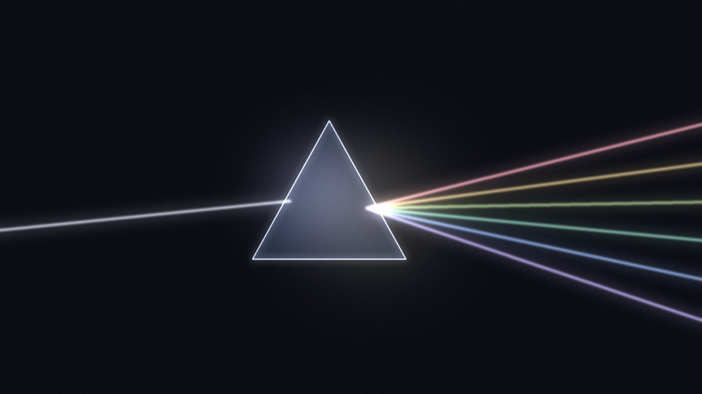

Panels
Every red dot, on the record.
Each scroll moves one whole page, like a product page. For: project launches and showcases.
The pattern
It turns at every mirror.
The dot travels in straight lines and never waits. The tracker draws every segment.


Twelve rooms
One record.
Every room's dot paths, in the same file.

Two years later
One beam.
Every color.
The dot is only light. Light bounces, and light spreads.
Start tracking.
Open source, free, and ready for any home with a windowsill.